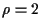

| Konzept für die evolutionäre Optimierung, welches einerseits der Berücksichtigung mehrerer (konkurrierender) Teilziele (multikriterielle Optimierung) auf natürliche Weise entgegenkommt und andererseits die Effizienz auf Parallelrechnern verbessern kann durch Überwindung der herkömmlichen Synchronisierung der Generationen: Die Beute-Individuen werden auf einem räumlichen Gitter angeordnet, auf dem die Räuber umherirren und gemäß je eigenem Teilziel lokale Selektion betreiben. Die entstehenden Lücken in der Beute-Population werden durch die üblichen Reproduktionsmechanismen mit Nachkommen der überlebenden Individuen wieder aufgefüllt. | |
| auch Ranking-Selektion, basierend auf der nach Zielfunktionswerten geordneten Rangliste der Population erfolgt die Zuweisung der Selektionswahrscheinlichkeiten als Funktion des Rangplatzes | |
| GA zum Optimieren in reellwertigen Suchräumen, im Gegensatz zum kanonischen GA (GA) besteht das Genom aus den (reellen) Objektparametern, d.h. es wird in der natürlichen Problemrepräsentation evolviert. Der r. GA verwendet spezielle Rekombinationsoperatoren, die Hybride aus intermediärer Rekombination (i.d.R. ) und Mutation darstellen; er kann selbstadaptives Verhalten zeigen. | |
| auch Migrationsmodell, Inselmodell, coarse grained model. Die Population wird in Unterpopulationen aufgeteilt. Der Selektionspool umfaßt alle Individuen einer Unterpopulation. Nur Individuen aus einer Unterpopulation können miteinander Nachkommen bilden. Von Zeit zu Zeit findet ein Austausch von Information (Individuen) zwischen den Unterpopulationen durch Migration statt. | |
| Variationsoperator, der die genetische Information zweier oder mehrerer Elternindividuen mischt und ein oder mehrere Individuen, die sogenannten Rekombinanten, produziert. In GA werden - dem biologischen Vorbild entsprechend - i.d.R. jeweils zwei Rekombinanten durch Crossover von zwei Eltern generiert. In der ES finden intermediäre und diskrete Rekombination Verwendung. | |
| Kopieren eines selektierten Individuums | |
| auch Codierung oder Problemrepräsentation, Abbildung des Optimierungsproblems auf der Ebene des Genoms. Man unterscheidet problemspezifische (auch ,,natürliche``) R. und problem unabhängige R. Bei der Parameteroptimierung sind bei der problemspezifischen R. Genotyp und Phänotyp identisch, während die natürliche R. bei der kombinatorischen oder der Strukturoptimierung zumeist nicht eindeutig (definierbar) ist. Der kanonische GA arbeitet typischerweise mit problemunabhängiger R., d.h. alle Suchräume werden auf die Menge der Bitketten abgebildet (Beispiel: Binär- oder Graycode zur Codierung von Zahlen). Sofern jede Eigenschaft des Phänotyps im Genotyp eindeutig repräsentiert ist, spricht man von direkter, andernfalls von indirekter Codierung; haben Teile des Genotyps keinen Einfluß auf den Phänotyp, spricht man von redundanter Codierung. | |
| randomisierte Variante der fitness-proportionalen Selektion |